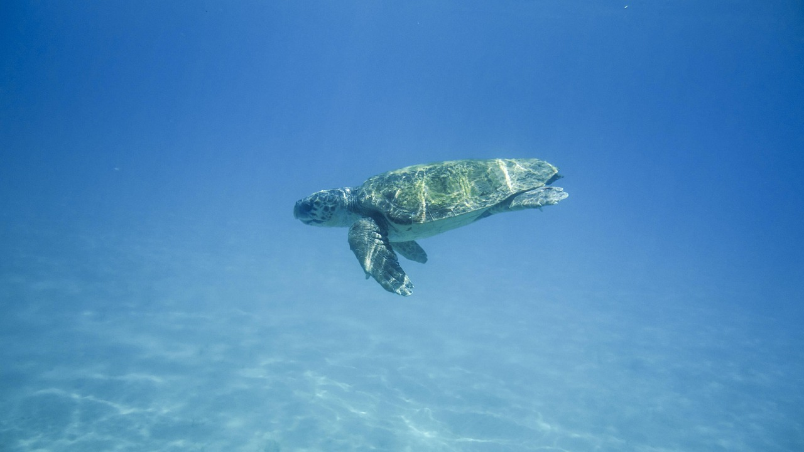
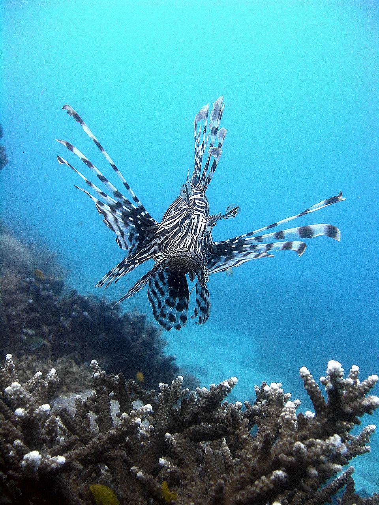
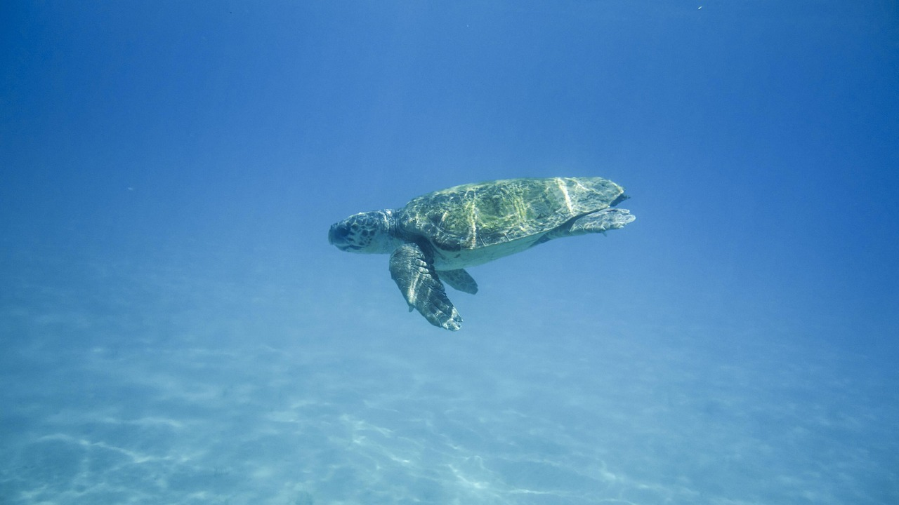
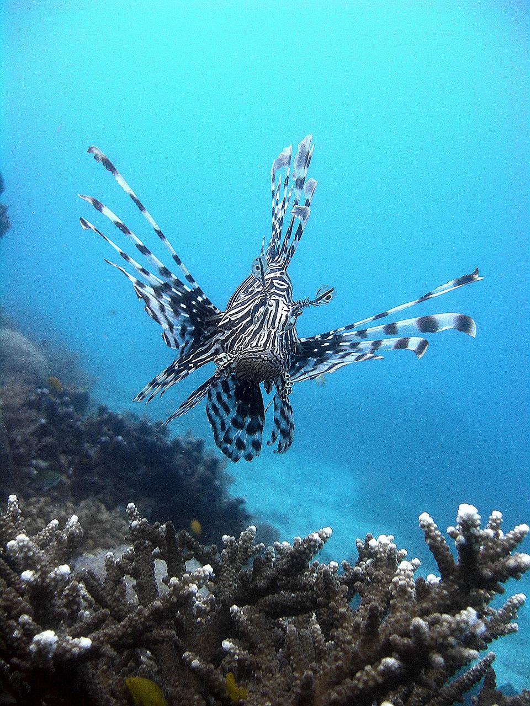

,
,
Il mio viaggio nel mondo sommerso: dalle Maldive alla Malesia
Il mio primo tuffo è stato alle Maldive, sull’isola di Dhiffushi. Era la mia prima volta con maschera e pinne e devo dire che è stato pazzesco. Ho nuotato vicino a piccoli squali, un’esperienza che non dimenticherò mai e che mi ha fatto venire voglia di immergermi ancora di più.
Dopo quel primo assaggio, ho deciso di fare sul serio e mi sono iscritto a un corso subacqueo di livello 2 in mare aperto, questa volta alle isole Perhentian in Malesia. Lì ho avuto la fortuna di incontrare tartarughe giganti che nuotavano tranquille vicino a me. È stato incredibile poterle osservare così da vicino, e ho capito quanto sia speciale questo mondo sotto la superficie.
Ogni immersione è stata un’avventura, piena di sorprese e incontri unici. Se vi piace il mare e volete scoprire qualcosa di diverso, vi consiglio di provare almeno una volta: non è solo sport, è un modo tutto nuovo di vedere il mondo.
 


